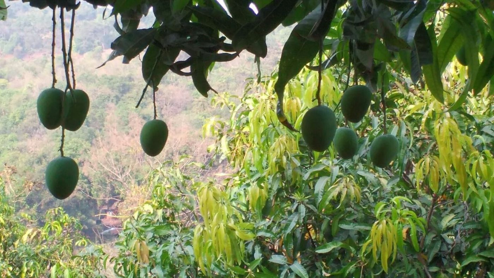

नकाशावरील ठिकाणापलीकडचा अनुभव
समुद्रकिनाऱ्याच्या पलीकडे.
अस्सल कोकणाच्या जवळ.
समुद्राची गाज, नारळी-पोफळीच्या बागांतून जाणारे वळणदार रस्ते आणि निवांत आस्वाद घ्यावा असे घरगुती जेवण—हेच कोकण. आमच्या सहलींमधून हाच अनुभव देण्याचा प्रयत्न आहे.
01
तुमच्या यादीतील तीन आवडती ठिकाणे
तुम्हाला नेहमीपासून पाहायचे असलेले किनारे, किल्ले आणि देवस्थाने सहलीत समाविष्ट करा.
02
नेहमीच्या वाटेपलीकडची दोन ठिकाणे
त्याच प्रदेशातील निवांत किनारे, गावातील पायवाटा आणि निसर्गरम्य ठिकाणांची निवड.
03
चला, तुमची सहल ठरवूया ↗तुमच्या कुटुंबाला किंवा गटाला अनुरूप नियोजन
तुमचे कुटुंब किंवा गट, प्रवास सुरू करण्याचे ठिकाण आणि तुम्हाला हवा असलेला प्रवासाचा वेग आम्हाला सांगा.